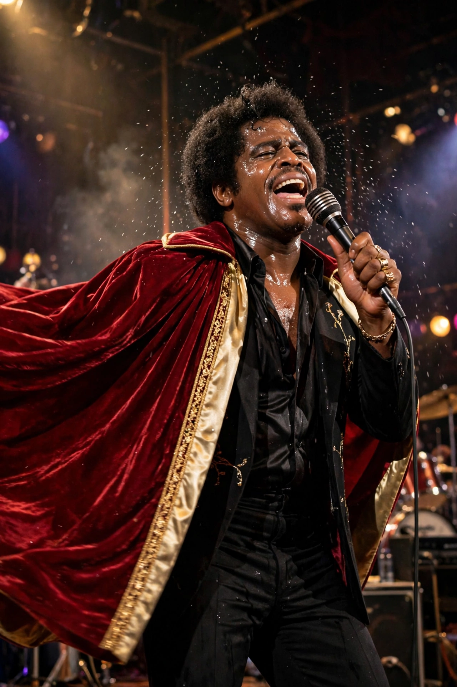

James Brown
From Wikipedia, the free encyclopedia

James Joseph Brown (3 May 1933 – 25 December 2006) was an American singer, songwriter, dancer and bandleader — the 'Godfather of Soul', 'Soul Brother No. 1' and 'the Hardest-Working Man in Show Business'. A foundational figure of twentieth-century music, he developed Soul music, invented Funk by putting rhythm first ('on the One'), and his grooves became the most sampled source in hip hop. Hits include 'Please, Please, Please' (1956), 'Papa's Got a Brand New Bag' (1965), 'I Got You (I Feel Good)', 'Cold Sweat' (1967) and 'Say It Loud – I'm Black and I'm Proud' (1968).
Rise
Born in poverty in Barnwell, South Carolina, and raised in Augusta, Georgia, Brown served time for armed robbery as a teenager before joining a gospel/R&B group that became the Famous Flames. Signed to King Records, he built a reputation for the most electrifying live act in America — the cape routine, dance splits, a drilled band fined for mistakes — and self-financed the landmark Live at the Apollo (1963), one of the greatest live albums ever made.
Funk and influence
From 'Papa's Got a Brand New Bag' through 'Cold Sweat' and 'Get Up (I Feel Like Being a) Sex Machine' (1970), Brown stripped melody to interlocking rhythm, creating funk and the template of the breakbeat. His band launched Bootsy Collins, Maceo Parker and Fred Wesley. 'Say It Loud' became a civil-rights anthem; his 1968 Boston concert, televised after Martin Luther King Jr.'s assassination, is credited with calming the city.
Later life
Legal and financial troubles, drug problems and a notorious 1988 police chase marred his later decades, but he performed relentlessly until his death in Atlanta on Christmas Day 2006. Brown's estate litigation lasted years; his influence on Michael Jackson, Prince and all of hip hop is incalculable — more than 800 documented samples of his work is a conservative count.